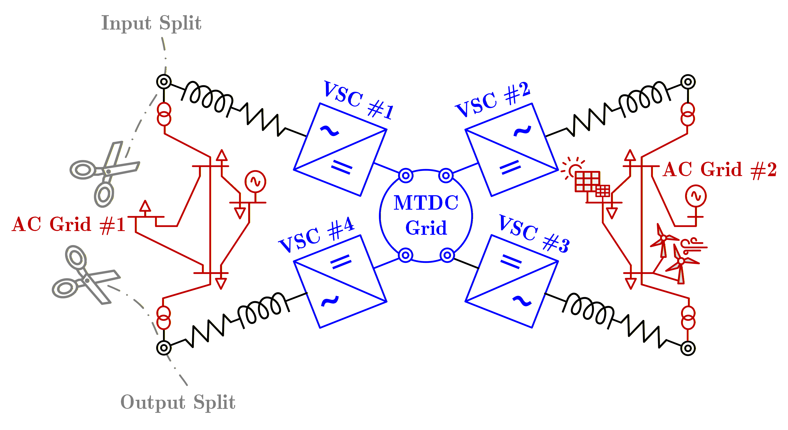
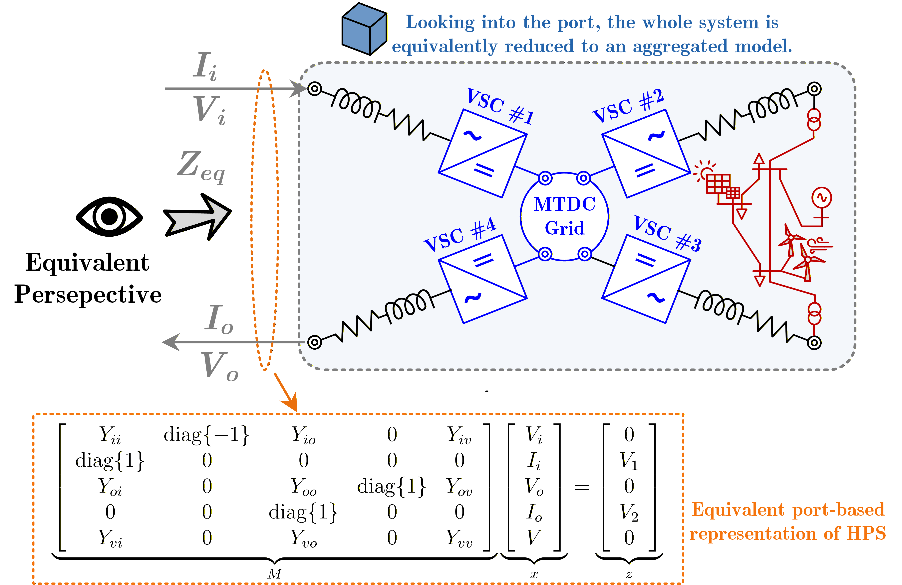

MMC
The HVDC system induces harmonics in the grid. These harmonics entail serious stability issues and are a real source of problems. Before going into system modeling to study the harmonic effect, a basic overview of the nature of the generated harmonics is important—a brief but detailed overview of the nature of harmonics or the multiples of generated harmonics.
Theoretical Background
Ajusted Modified Nodal Analysis Approach
To effectively compute the equivalent impedance for a given circuit, the adjusted modified nodal analysis (MNA) approach is utilized Ho, Ruehli, and Brennan (1975), which is applied with following steps:
Step 1 👣
Determine the input and output of the circuit where you want to determine the equivalent impedance, see Figure 1.

Step 2 👣
Assign input and output current as depicted in Figure 2.

Step 3 👣
Build MNA by adding all components except the ones on the direct connection to the input and output pins. Those components are considered as non-existent as seen in Figure 2. Furthermore, the following sorting of variables should be applied: \(\left[V_i, I_i, V_o, I_o, V\right]\), where where \(V_i\) and \(I_i\) present voltages and currents at the input like depicted in Figure 2. \(V_o\) and \(I_o\) are output voltages and currents, and \(V\) are other voltage buses/nodes that are not input and output ones.
Step 4 👣
Build MNA by adding all components except the ones on the direct connection to the input and output pins. Those components are considered as non-existent as seen in Figure 2. Furthermore, the following sorting of variables should be applied: \(\left[V_i, I_i, V_o, I_o, V\right]\), where where \(V_i\) and \(I_i\) present voltages and currents at the input like depicted in Figure 2. \(V_o\) and \(I_o\) are output voltages and currents, and \(V\) are other voltage buses/nodes that are not input and output ones.
\[\begin{equation} \underbrace{\begin{bmatrix} Y_{ii} & \operatorname{diag}\{-1\} & Y_{io} & 0 & Y_{iv} \\ \operatorname{diag}\{1\} & 0 & 0 & 0 & 0 \\ Y_{oi} & 0 & Y_{oo} & \operatorname{diag}\{1\} & Y_{ov} \\ 0 & 0 & \operatorname{diag}\{1\} & 0 & 0 \\ Y_{vi} & 0 & Y_{vo} & 0 & Y_{vv} \end{bmatrix}}_{M} \underbrace{\begin{bmatrix} V_i \\ I_i \\ V_o \\ I_o \\ V \end{bmatrix}}_{x} = \underbrace{\begin{bmatrix} 0 \\ V_{1} \\ 0 \\ V_{2} \\ 0 \end{bmatrix}}_{z}, \label{eq:mna} \end{equation}\]
where \(Y_{xy}\) are Y parameters for the specified block of nodes \(x\) and \(y\). Values \(V_1\) and \(V_2\) are symbolic vectors of values assigned to input and output nodes. With \(0\) is denoted zero matrix. For simplicity, the dimensions are skipped in the previous equation.
Step 5 👣
The previous equation \(\eqref{eq:mna}\) is solved using the reduced row echelon form Bird (2017) on the concatenated matrices \(M\) and \(z\). This will solve the system of equations by enforcing the values for variables \(x\) to diagonal 1 values, and on the position of \(z\) column would be the expected solution.
Step 6 👣
By taking values for \(V_i\) and \(I_i\) and dividing them, we obtain the equivalent impedance per phase.
Stability Assessment Procedure
The stability assessment procedure follows the steps:
Step 1 👣
Divide components per AC and DC areas, and converter group. Enable pointers for the connections with converters. This has been achieved by defining the SubNetwork class that contains network portions.
Step 2 👣
Estimate equivalent admittance parameters of the subnetwork between outputs (connections to converters) for each AC and DC area. Please note that the AC side is transformed to the DQ frame during this calculation inside the Element class Sakinci, Lekić, and Beerten (2022), Hernández-Ramı́rez, Segundo-Ramı́rez, and Molinas (2024), given as:
\[\begin{equation} \mathbf Y_{dq} = \tfrac{1}{6}\, \left\{\mathbf a\,\mathbf Y(j(\omega-\omega_0))\,\mathbf a^{H} + \tfrac{1}{6}\,\mathbf a^{*}\,\mathbf Y(j(\omega+\omega_0))\,\mathbf a^{T} \right\}_{dq}, \label{eq:coeffs_full} \end{equation}\]
The derivation follows the corrected theorem from Appendix A from . Namely, starting from Fourier transformation of the Park transform \(P_{\omega_0}(j\omega)\) and \(P_{\omega_0}^{-1}(j\omega)\) as:
\[\begin{equation} \label{A.3} P_{\omega_0}(j\omega) = \frac{2\pi}{3}\Big(\, \mathbf{a}\,\delta(\omega-\omega_0) + \mathbf{a}^*\,\delta(\omega+\omega_0) + \mathbf{c}\,\delta(\omega) \Big) \end{equation}\] and \[\begin{equation} \label{A.4} P_{\omega_0}^{-1}(j\omega) = \pi\Big(\, \mathbf{a}^T\,\delta(\omega-\omega_0) + \mathbf{a}^{H}\,\delta(\omega+\omega_0) + 2\,\mathbf{c}^T\,\delta(\omega) \Big) \end{equation}\]
where \(\mathbf{a}*\) is elementwise complex conjugate of \(\mathbf{a}\), and \(\mathbf{a}^H = (\mathbf{a}*)^T\) is Hermitian transpose of \(\mathbf{a}\). Furthermore, \[\begin{equation} \mathbf{a} = \begin{bmatrix} 1 & \exp(j \varphi) & \exp(2j \varphi) \\ j & j \exp(j\varphi) & j\exp(2j \varphi) \\ 0 & 0 & 0 \end{bmatrix} , \qquad \mathbf{c} = \begin{bmatrix} 0 & 0 & 0 \\ 0 & 0 & 0 \\ 1 & 1 & 1 \end{bmatrix}. \end{equation}\]
Starting from relationship \(I_{abc}(j\omega) = Y(j\omega) V_{abc}(j\omega)\), when applying the Park transformation, we get: \[\begin{equation} I_{dqz}(j\omega) = \frac{1}{2\pi} P_{\omega_0}(j\omega) \otimes \left(Y(j\omega) \frac{1}{2\pi} P^{-1}_{\omega_0} (j\omega) \otimes V_{dqz}(j\omega) \right), \end{equation}\] which gives \[\begin{equation} \begin{aligned} \mathbf I_{dqz}(j\omega) &= \tfrac{1}{6}\,\mathbf a\,\mathbf Y\!\big(j(\omega-\omega_0)\big)\,\mathbf a^{T}\, \mathbf V_{dqz}\!\big(j(\omega-2\omega_0)\big) \\[3pt] &\quad + \tfrac{1}{6}\,\mathbf a\,\mathbf Y\!\big(j(\omega-\omega_0)\big)\,\mathbf a^{H}\, \mathbf V_{dqz}\!\big(j\omega\big) + \tfrac{1}{3}\,\mathbf a\,\mathbf Y\!\big(j(\omega-\omega_0)\big)\,\mathbf c^{T}\, \mathbf V_{dqz}\!\big(j(\omega-\omega_0)\big) \\[3pt] &\quad + \tfrac{1}{6}\,\mathbf a^{*}\,\mathbf Y\!\big(j(\omega+\omega_0)\big)\,\mathbf a^{T}\, \mathbf V_{dqz}\!\big(j\omega\big) + \tfrac{1}{6}\,\mathbf a^{*}\,\mathbf Y\!\big(j(\omega+\omega_0)\big)\,\mathbf a^{H}\, \mathbf V_{dqz}\!\big(j(\omega+2\omega_0)\big) \\[3pt] &\quad + \tfrac{1}{3}\,\mathbf a^{*}\,\mathbf Y\!\big(j(\omega+\omega_0)\big)\,\mathbf c^{T}\, \mathbf V_{dqz}\!\big(j(\omega+\omega_0)\big) \\[3pt] &\quad + \tfrac{1}{6}\,\mathbf c\,\mathbf Y\!\big(j\omega\big)\,\mathbf a^{T}\, \mathbf V_{dqz}\!\big(j(\omega-\omega_0)\big) + \tfrac{1}{6}\,\mathbf c\,\mathbf Y\!\big(j\omega\big)\,\mathbf a^{H}\, \mathbf V_{dqz}\!\big(j(\omega+\omega_0)\big) \\[3pt] &\quad + \tfrac{1}{3}\,\mathbf c\,\mathbf Y\!\big(j\omega\big)\,\mathbf c^{T}\, \mathbf V_{dqz}\!\big(j\omega\big). \end{aligned} \label{eq:Vdq_expanded_corrected} \end{equation}\]
Step 3 👣
Use formulas for converter cross-connections on DC side given in below equation \(\eqref{eq:8}\) and \(\eqref{eq:9}\).
\[\begin{eqnarray} i_{d,q}^\Delta = Y_{dq} v_{d,q} + a_{2 \times 1} v_{dc}, \label{eq:8} \\ i_{dc} = b_{1 \times 2} v_{d,q} + Y_{dc} v_{dc}, \label{eq:9} \end{eqnarray}\]
Namely, for the DC admittance visible inside the converter, we use the already known AC side admittance denoted as \(Y_{eq,AC}\). Then we have that: \[\begin{eqnarray} i^\Delta_{dq} = Y_{dq, conv} v_{dq} + a_{2\times 1, conv} v_{dc} = Y_{eq, AC} v^\Delta_{dq}, \\ v^\Delta_{dq} = (Y_{eq,AC} - Y_{dq, conv})^{-1} \, a_{2\times 1, conv} \, v_{dc}, \\ i_{dc} = \underbrace{(b_{1\times 2, conv} \, (Y_{eq,AC} - Y_{dq, conv})^{-1} \, a_{2\times 1, conv} + Y_{dc, conv})}_{Y_{eq, conv}} \, v_{dc}, \label{eq:dc_crosscouple} \end{eqnarray}\] which is the value used in further calculation.This case is applicable for every converter that is not considered for the local stability check, and for the DC cutting side of the converter, for the estimation of local stability.
Please note that the calculated admittance parameters \(Y_{eq, AC}\) in this case are also the input in the AC network when looking from the AC side of the converter. That is ensured by defining only one so-called output bus of the SubNetwork class.
Step 4 👣
Find closing impedance on DC side. Here, we consider equivalent admittance parameters of the DC of the converter, which is examined for stability check, and that bus connection (with converter) we consider as an input. The other DC network outputs are considered outputs closed with ``closing impedance’’ determined in the previous step. The closing impedance will look as \(Y_L = \operatorname{diag}\{ Y_{eq, conv1} , \cdots , Y_{eq, convN} \}\), for \(N\) being the number of converters which are not examined for stability (i.e. one less than the total number of converters in the system, not considering the converters included as a part of RES), and \(Z_{eq,conv} = Y_{eq,conv}^{-1}\).
Then we have that the admittance parameters can be divided into \(Y_{11}\), \(Y_{12}\), \(Y_{21}\), and \(Y_{22}\) after identifying the input and outputs, and have that:
\[\begin{eqnarray} I_{in} = Y_{11} V_{in} + Y_{12} V_{out}, \\ I_{out} = Y_{21} V_{in} + Y_{22} V_{out}, \\ V_{out} = - Z_L I_{out}, \end{eqnarray}\]
and finally, we get that: \[\begin{equation} I_{in} = \underbrace{Y_{11} + Y_{12} (Y_L + Y_{22}) Y_{21}}_{Y_{eq}} V_{in}. \end{equation}\]
Step 5 👣
Couple AC and DC sides of the converter of interest. Here we identify two cases:
If the system is cut on the DC side, then we will use the formula for the DC side cross-coupling \(\eqref{eq:dc_crosscouple}\), and the admittance on its AC side calculated in step 1, and calculate the transfer function as: \(TF(s) = Y_{eq, conv} Y_{eq, DC}^{-1}\).
If the system is cut on the AC side, we use the admittance calculated in step 4, estimate the admittance visible at the converter’s AC side as follows.
To estimate the AC admittance, we follow the same procedure, and we have:
\[\begin{eqnarray} i_{dc} = b_{1\times 2, conv} \, v_{dq}^\Delta + Y_{dc, conv} \, v_{dc} = Y_{eq,DC} \, v_{dc}, \\ v_{dc} = \frac{b_{1\times 2, conv} \, v_{dq}^\Delta}{Y_{eq,DC} - Y_{dc, conv}}, \\ i^\Delta_{dq} = \underbrace{\left( Y_{dq,conv} + \frac{a_{2 \times 1, conv} b_{1 \times 2, conv}}{Y_{eq,DC} - Y_{dc, conv}} \right)}_{Y_{eq,conv}} \, v_{dc}. \end{eqnarray}\]
Finally, calculate the transfer function with the AC admittance calculated in step 1 as \(TF(s) = Y_{eq, conv} Y_{eq, AC}^{-1}\).
Code Explanation
The following example implements a simple hybrid AC/DC system and evaluates the small-signal transfer function of a selected MMC converter.
General Workflow
Network Definition 👣
#include "Examples.h"
#include "../network.h"
#include "../Bus.h"
#include "../Include_components.h"
#include "../Solver/Stability_Estimate/Stability_estimate.h"
#include "../Solver/OPF/powerflow.h"
void example_stability_check() {
Network net;A global Network object is created to store all buses and components.
AC and DC System Construction 👣
/* AC buses */
Bus* bus1_ac = new Bus("ACBUS01", "AC1", 3);
Bus* bus2_ac = new Bus("ACBUS02", "AC1", 3);
Bus* bus3_ac = new Bus("ACBUS03", "AC2", 3);
Bus* bus4_ac = new Bus("ACBUS04", "AC2", 3);
/* DC buses */
Bus* bus1_dc = new Bus("DCBUS01", "DC1", 1);
Bus* bus2_dc = new Bus("DCBUS02", "DC1", 1);Two AC areas and one DC area are defined.
Component Connections 👣
/* Load and source */
Load* load2 = new Load("LOAD02", "AC2", 3, load_params2);
net.connectElementToBus(load2, 1, bus4_ac);
AC_source* src1 = new AC_source("SRC01", "AC1", 3, 345e3, Zsrc);
net.connectElementToBus(src1, 1, bus1_ac);
/* DC branch */
Impedance* br1_dc = new Impedance("br1_dc", "DC1", 1, 0.05);
net.connectElementToBus(br1_dc, 1, bus1_dc);
net.connectElementToBus(br1_dc, 2, bus2_dc);Loads, source, and DC impedance define the steady-state power flow structure.
MMC Converter Modeling 👣
MMC* mmc1 = new MMC("MMC1", "AC1_DC1",
converter_params1,
controller_params1);
net.connectElementToBus(mmc1, 1, bus2_ac);
net.connectElementToBus(mmc1, 2, bus1_dc);The MMC connects the AC and DC areas.
Steady-State Solution 👣
PowerFlow pf;
pf.make_OPF(&net, global_params, false, false, false, true);An OPF-based steady-state solution is computed before small-signal analysis.
This provides the operating point for impedance evaluation.
Stability Evaluation 👣
StabilityEstimate* stability = new StabilityEstimate();
stability->add_areas(&net);
stability->compute_transfer_function("MMC2", "AC", 1000);
delete stability;
}The stability module:
- Partitions the network into subnetworks
- Aggregates equivalent admittances
- Computes the transfer function
For the AC-cut case, the transfer function corresponds to:
[ TF(s) = Y_{eq,conv} , Y_{eq,AC}^{-1} ]
evaluated at the selected frequency.
Implement Results
First, the OPF results are printed, showing the bus voltages, generation, load, and branch flows.
=================================================================================================
| AC Grid Bus Data |
=================================================================================================
Area Bus Voltage Generation Load RES
# # Mag [pu]/Ang [deg] Pg [MW] Qg [MVAr] P [MW] Q [MVAr] Pres [MW] Qres[MVAr]
----- ----- ------------------ -------- --------- ------- ------- --------- -----------
1 1 1.093 / 0.00* - - 0.00 0.00 - -
1 2 1.093 / 0.02 - - 0.00 0.00 - -
1 3 1.093 / -0.00 52.20 16.85 0.00 0.00 - -
2 1 1.091 / 0.00 - - 0.00 0.00 - -
2 2 1.091 / 0.02 - - 50.18 10.07 - -
----- ----- ------------------ -------- --------- ------- ------- --------- -----------
The total generation cost is $712.44/MWh (€659.66/MWh)
===========================================================================================
| AC Grids Branch Data |
===========================================================================================
Area Branch From To From Branch Flow To Branch Flow Branch Loss
# # Bus# Bus# Pij [MW] Qij [MVAr] Pij [MW] Qij [MVAr] Pij_loss [MW]
---- ------ ----- ----- --------- ---------- ---------- ---------- -------------
1 1 1 2 52.279 -9.318 -52.275 9.357 0.004
1 2 1 3 -52.198 18.328 52.198 13.767 0.000
2 1 1 2 50.104 9.295 -50.100 -9.263 0.003
---- ------ ----- ----- --------- ----------- -------- ---------- -------------
The total AC network losses is 0.007 MW.
================================================================================
| MTDC Bus Data |
================================================================================
Bus Bus AC DC Voltage DC Power PCC Bus Injection Converter loss
DC # AC # Area Vdc [pu] Pdc [MW] Ps [MW] Qs [MVAr] Conv_Ploss [MW]
----- ---- ---- --------- -------- ------- -------- ------------
1 1 2 1.197 -51.171 -50.104 -9.295 1.155
2 2 1 1.197 51.173 52.275 -9.357 1.188
----- ---- ---- --------- -------- ------- -------- --------
The total converter losses is 2.344 MW
===================================================================
| MTDC Branch Data |
===================================================================
Branch From To From Branch To Branch Branch Loss
# Bus# Bus# Flow Pij [MW] Flow Pij [MW] Pij_loss [MW]
------ ----- ----- --------- --------- ---------
1 1 2 -51.171 51.173 0.002
------ ----- ----- --------- --------- ---------
The total DC network losses is 0.002 MW.
Execution time is 0.153 s
Then, MMC operating points are updated with the OPF results, and the equilibrium state is printed for each MMC.
=== Updating 2 MMC elements with OPF results ===
Converged (small step) in 1491 iterations.
[Updated MMC] MMC2 | Vm=376.266 kV, theta=0.000 deg, Pac=-50.104 MW, Qac=-9.295 MVar, Vdc=412.837 kV, Pdc=-51.171 MW
Equilibrium state:
-90.697 16.469 -41.317 -0.000 -0.000 -536.614 1909.500 0.646 0.761 236.244 -1317.610 412833.448
Converged (small step) in 176414 iterations.
[Updated MMC] MMC1 | Vm=377.189 kV, theta=0.021 deg, Pac=52.275 MW, Qac=-9.357 MVar, Vdc=412.840 kV, Pdc=51.173 MW
Equilibrium state:
92.395 16.537 42.223 0.000 0.000 -538.883 -1975.195 0.701 -0.774 237.911 1345.923 412836.345
=== StabilityEstimate: Area Summary ===
AC Grids Detected: 2
- AC2 (2 buses, 2 elements, 1 outputs)
- AC1 (2 buses, 2 elements, 1 outputs)
DC Grids Detected: 1
- DC1 (2 buses, 1 elements, 2 outputs)
Y1 at 1000 Hz:
(0.0006251813,-0.0045456903) (0.0000080989,-0.0000237153) (0.0000034384,0.0000338422)
(-0.0033601746,0.0028059178) (0.0000567312,-0.0000600855) (-0.0000607055,0.0000520370)
(0.0000149273,-0.0000057094) (-0.0000114782,0.0000123063) (0.0001530480,0.0002909866)
Y2 at 1000 Hz:
(-0.1296974762,-1.1061076269) (-0.0000327654,0.0000043749) (0.0000325752,-0.0000033223)
(-1.2724353572,-0.6174201797) (0.0000380460,-0.0000613489) (0.0000214998,-0.0000383601)
(-0.0013739688,-0.0013977386) (-0.0000002174,0.0000026871) (0.0002159779,0.0002087296)